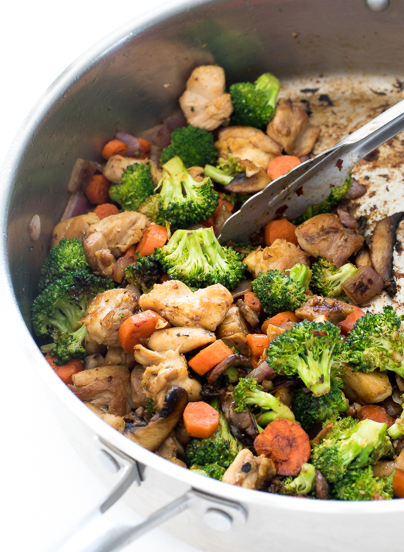

Chicken Stir Fry

Description
This is a classic chicken stir fry I learned from my Grandmother. It
is easy to make in twenty minutes or less and is quite delicious!
Ingredients
- 1 bag of broccoli
- 1 bag of mushrooms
- 3 whole carrots
- 1 lb of chicken thighs
- 2 cloves of garlic
- 1/2 of a yellow onion
- 1 tbps of ginger
- 2 tbsp of sesame oil
- 1/2 cup of soy sauce
- 1 tbsp of mirin
- 1 cup of uncooked rice
- salt and pepper for taste
Steps
- Start by preparing and cooking the rice. I like to wash my rice
in the rice cooker before setting it to cook
- Wash and cut your broccoli into small thumb size pieces.
- Peel your carrots and cut them into quarter sized circles.
- Wash mushrooms thoroughly, and set aside all vegetables.
- Peel and mince your garlic cloves.
- Dice your onion.
- Peel and cut your ginger into thin slices.
- Cut chicken thighs into thumb size pieces. Make sure all your
chicken pieces are similar sizes!
- Turn on your stove to medium-high heat and pour 1 tbsp of sesame oil
into the pan.
- Once the oil begins to glisten, throw your garlic, onion and
ginger into the pan.
- After thirty seconds toss your chicken into the pan.
- When the chicken is halfway cooked, mix into the soy sauce,
mirin, salt and pepper.
- Once the chicken is fully cooked, set it aside onto an
empty plate.
- In the same pan pour another 1 tbsp of sesame oil.
- Toss in the broccoli, carrots and mushrooms.
- Cook vegetables for roughly 3-5 minutes until tender.
- Once the rice is finished cooking, add all ingredients
together.
- Enjoy!